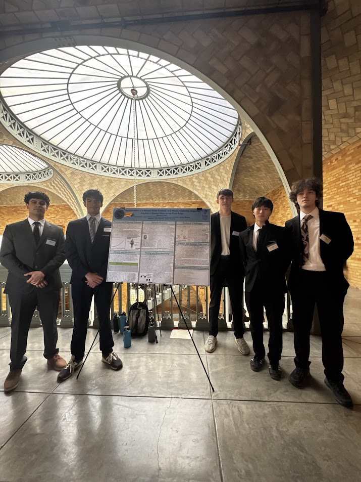

Recently, I took the initiative to participate in a bioengineering high school competition (BioEHSC) at UC Berkeley to further my knowledge regarding engineering. BioEHSC is an 8 week long competition that allows high school students to pick a problem surround biomed or bioengineering, then develop a solution for said problem and present it to judges at UC Berkeley through means of a poster, slideshow, and video. Throughout the process of exploring potential topics, our group became increasingly aware of the many societal issues, particularly food waste. In turn, our group decided to base our project around implementing a banana-based polylactic acid (PLA) plastic made out of overripe bananas, in hopes of reducing the amount of food waste in our world today while also creating a sustainable, practical alternative that can be used by a variety of industries on a daily basis. We then traveled to UC Berkeley to present our finished work. On campus, we presented a total of 4 times, 2 industry pitches where multiple groups set up posters and the judges walked around listening and asking questions, and 2 10 minute slideshow presentations with a 4 minute Q&A period after. This experience has overall deepened my understanding and interest in science and sustainability, as well as exposed me to a new area of engineering.